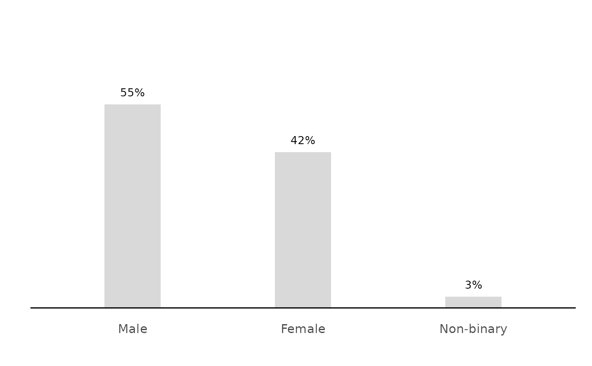
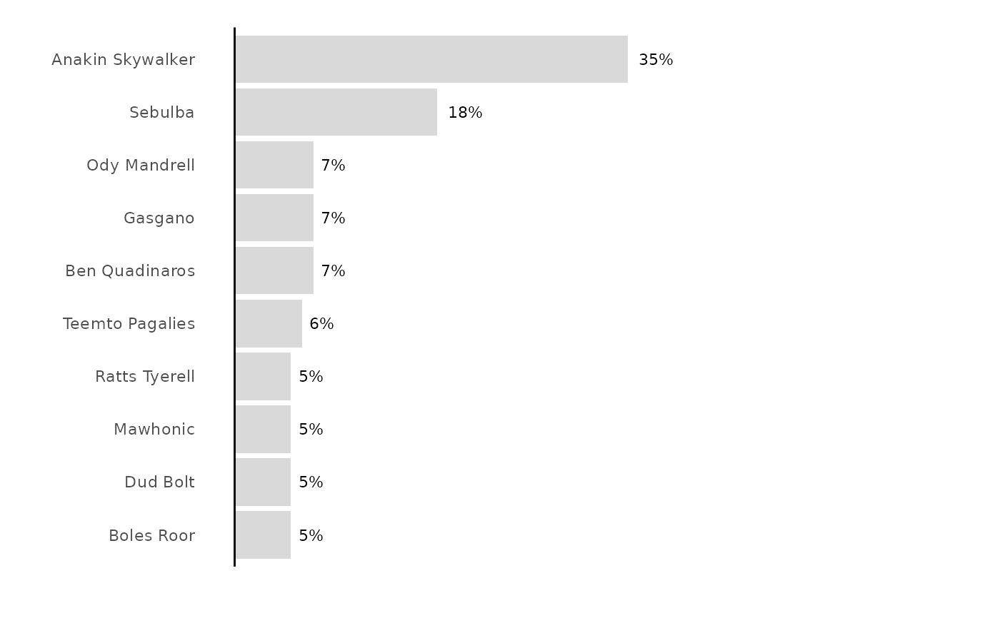
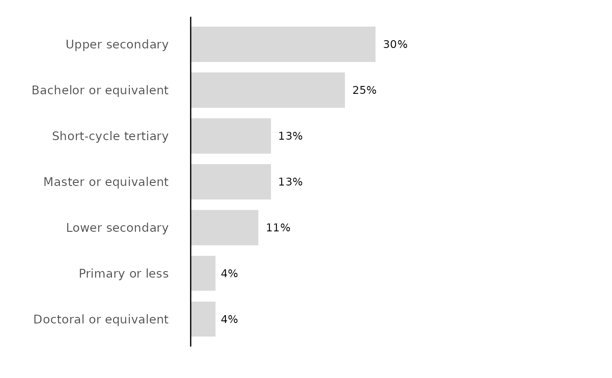

Plots the output of calc_percentage() (or calc_percentage_multi()) as a
labelled bar chart, with a tidy auto-scaled axis (nice_max()) and the
ezrsurvey theme. By default the layout is chosen for you: vertical columns
for a few short labels, horizontal bars for many or long ones, with long
labels wrapped, the text size stepped down as bars multiply, and the bars
ordered so the longest sits at the top (bars) or on the left (cols).
Usage
plot_bars(
data,
label = NULL,
value = pct,
orientation = c("auto", "cols", "bars"),
sort = c("auto", "none", "asc", "desc"),
wrap = NULL,
flip = NULL,
avg_line = FALSE,
axis_labels = FALSE,
unit = ezrsurvey_default("pct_axis_unit"),
max = ezrsurvey_default("pct_axis_max"),
fill = NULL,
title = NULL,
label_size = NULL
)Arguments
- data
A data frame with a category column and a value column.
- label
Category column (unquoted). If
NULL(default), the first non-n, non-value column is used.- value
Value column (unquoted). Defaults to
pct.- orientation
"auto"(default),"cols"(vertical) or"bars"(horizontal)."auto"picks horizontal bars when there are more thanbar_cols_max_itemsitems or a label longer thanbar_cols_max_labelcharacters (seeezrsurvey_options()).- sort
"auto"(default),"none","asc"or"desc"."auto"orders bars by value so the longest is on top (bars) or on the left (cols), but leaves an intentional ordinal scale (an ordered factor, e.g. from a registered order) untouched.- wrap
Label wrap width in characters (
stringr::str_wrap()).NULL(default) usesbar_wrap_cols/bar_wrap_barsfor the chosen orientation.- flip
Deprecated back-compat shortcut:
TRUEforcesorientation = "bars",FALSEforces"cols".NULL(default) defers toorientation.- avg_line
If
TRUE, add a reference line at the mean value. Defaults toFALSE.- axis_labels
If
TRUE, show the percentage axis; ifFALSE(default) hide it (the bars carry their own data labels).- unit
Axis rounding step passed to
nice_max(). Defaults to thepct_axis_unitoption (25; seeezrsurvey_options()).- max
Optional fixed y-axis maximum (e.g.
100). Defaults to thepct_axis_maxoption (NULL= dynamic).- fill
Bar fill colour.
NULL(default) uses the brand primary colour when a brand is set (seeuse_brand()), else pal_neutral.- title
Optional plot title.
- label_size
Data-label text size.
NULL(default) steps down frombar_label_sizeas the number of bars grows (floored atbar_size_min).
Details
Expects a summary table (from calc_percentage() and friends), not raw survey
rows. The label column is auto-detected as the first non-n, non-value column,
so a piped percentage table just works. The layout decisions all read from the
bar_* options (ezrsurvey_options()): orientation = "auto" switches to
horizontal bars once there are many or long labels, labels are wrapped to
bar_wrap_cols / bar_wrap_bars, the data-label size steps down with the
bar count, and sort = "auto" puts the longest bar at the top (bars) or on the
left (cols) – unless the label column is an ordered factor (a registered or
explicit order), which is preserved. The axis ceiling is chosen by nice_max()
/ the pct_axis_* options so data labels never collide with the panel top, and
the % axis is hidden unless axis_labels = TRUE. Add decision guidance with
annotate_bands().
Bars are drawn to a constant thickness regardless of how many there are
(bar_width / bar_ref_items, see ezrsurvey_options()), so a three-answer
chart and a ten-answer chart look like they belong in the same deck instead
of the first one's bars turning into slabs.
Examples
# auto layout: few short labels -> vertical columns, largest on the left
calc_percentage(podracing_survey, demo_gender) %>% plot_bars()

# many long labels -> horizontal bars, wrapped, largest on top
calc_percentage(podracing_survey, fav_driver) %>% plot_bars()

# an ordinal scale keeps its order; force horizontal with orientation
calc_percentage(podracing_survey, demo_edu) %>%
plot_bars(orientation = "bars")
